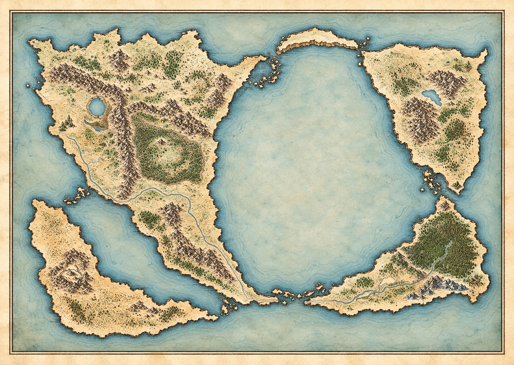
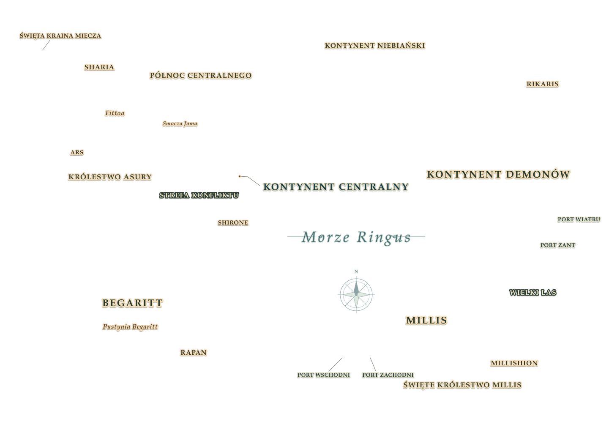
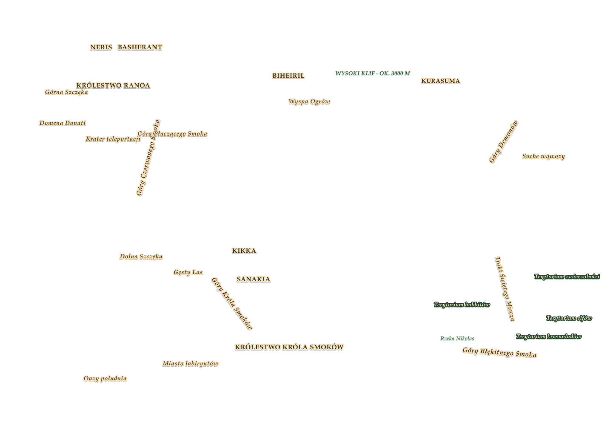

六MUSHOKU TENSEIWIELKI ATLAS ŚWIATA
ATLAS / ŚWIAT LUDZI
Mapa świata
Wybierz punkt, przybliż mapę lub obróć relief 3D.
TRASY PODRÓŻY
S1 POWRÓT DO DOMUS2 SHARIA → BEGARITTS3 NOWY PUNKT ZWROTNY
POŁOŻENIA I SZLAKI SĄ ORIENTACYJNE · S3 DO ODC. 14
PRZECIĄGNIJ · PRZESUŃ / KÓŁKO · ZOOM
TRASA / SEZON 01Drugie życie
01 / 24Buena, nauka magii i pierwsze wyjście poza rodzinny dom.
六BUDOWANIE ŚWIATA 3D